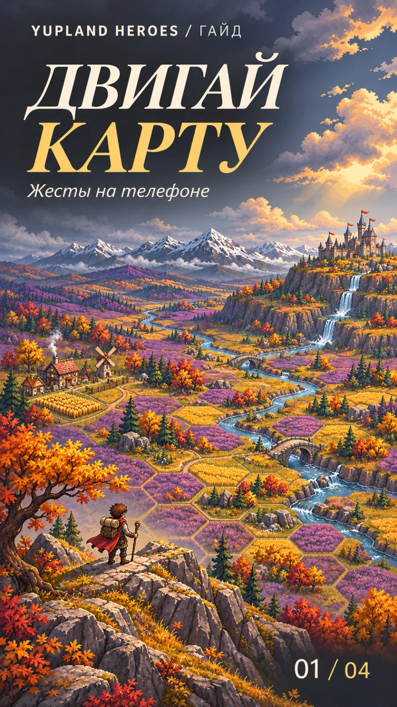
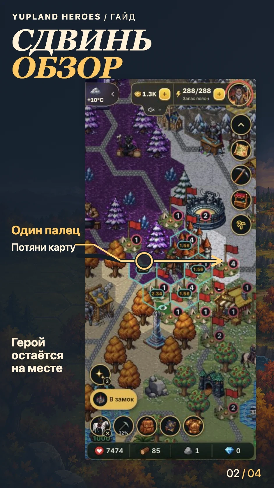
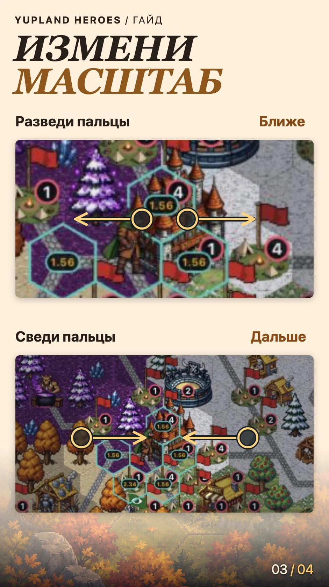
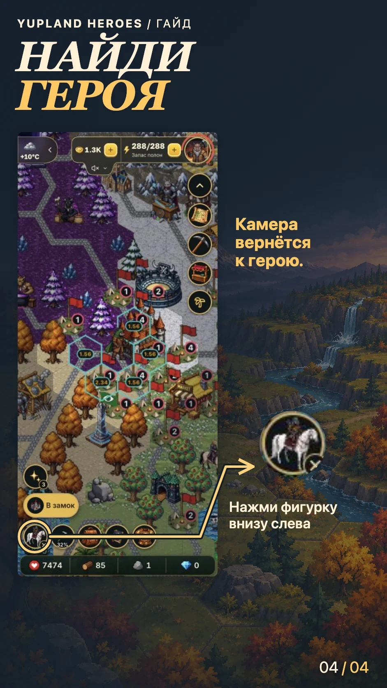

Как двигать и приближать карту на телефоне
-
Обложка 
-
Шаг 01 
-
Шаг 02 
-
Шаг 03 
Сдвинь обзор
Поставь один палец на свободный участок карты и потяни в сторону. Короткое касание выбирает клетку или объект, а перетаскивание сдвигает обзор. Герой остаётся на своей клетке. Чтобы отправить его к цели, выбери её и подтверди маршрут.
Измени масштаб
Поставь два пальца на карту. Разведи их, чтобы рассмотреть соседние клетки, или сведи, чтобы увидеть больше территории.
Снова найди героя
Когда герой стоит, нажми на его фигурку внизу слева. Камера вернётся к нему. Во время движения на месте фигурки появляется «Стоп». Нажатие остановит героя.
Чтобы быстро найти дальний ориентир, открой обзорную карту.